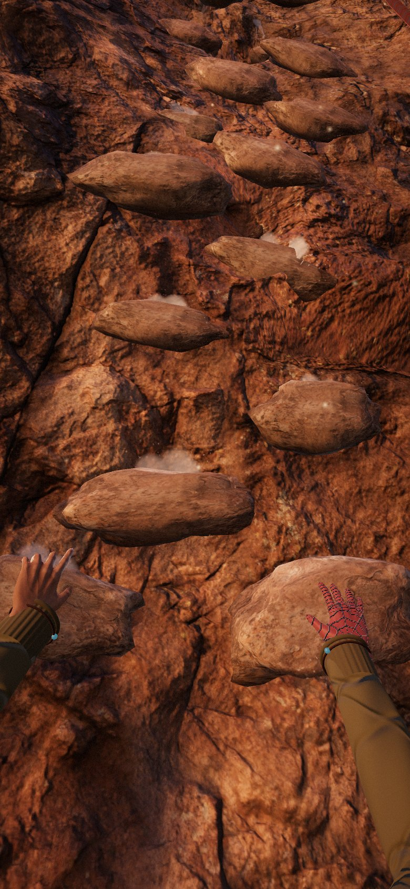

B34 — the LOOK and WEB pads sit on the sticks
Real frame from the game, real control sizes, bottom 330 px of a 390×844 phone. The red hatch is where a thumb is handed to the pad instead of the stick.
Sticks 136 px · grips 136×46 · pads 80×31 at z-index 40 against the HUD's 10 · clusters 18 px from each edge, which leaves an 82 px gap down the middle.

Today broken
Both pads sit inside the stick rings. Slide a thumb down the bottom of a stick and the hand stops moving — LOOK swallows the touch.
You feel it most where you least want to: reaching a hand downward, which is the one direction that drags the thumb to the bottom of the ring.
A · In the column my pick
Each pad becomes the top of its own control stack: LOOK / GRIP / stick on the left, WEB / GRIP / stick on the right.
Can never overlap again — it is stacked in the flow, not floated over the HUD. Target grows from 80 to 136 px wide. WEB lands on the right hand, whose ability it actually is. Landscape gets fixed by the same stroke.
Costs: the clusters get 45 px taller, and LOOK is no longer near the middle — it is a left-thumb button now.
B · Down the middle
Both pads stacked in the 82 px gap between the clusters, at the same height they are now.
Equal reach from either thumb, and nothing else on the screen moves.
Costs: 4 px of clearance either side on a 390 px phone — one wider phone or one bigger stick and it is back. Narrower targets, and the lower pad sits on the home-indicator strip.
C · Lifted above the grips
The pads stay a centred pair and simply rise clear of everything, 236 px off the bottom.
Smallest change in the code: one bottom value, nothing re-parented.
Costs: that is a real stretch for a thumb mid-climb, and the pads end up floating over the wall belonging to nothing.